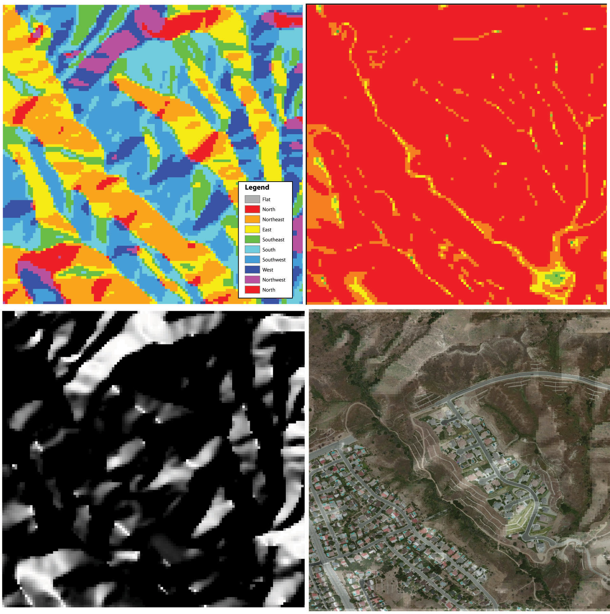
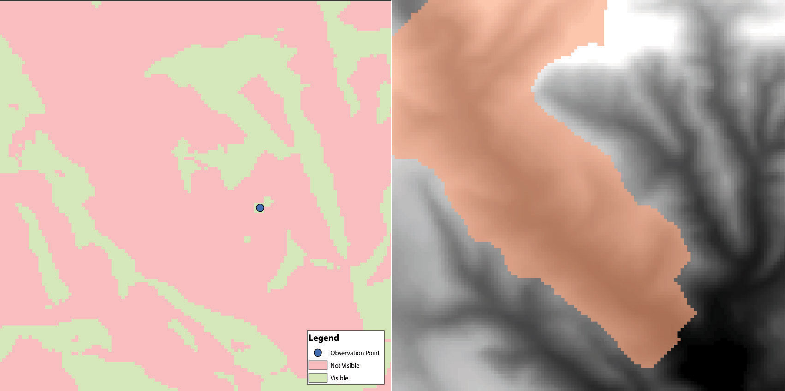

Surface analysis is often referred to as terrain (elevation) analysisVector or raster dataset that contains an attribute value for every locale throughout its extent. when information related to slope, aspect, viewshed, hydrology, volume, and so forth are calculated on raster surfaces such as DEMs (digital elevation models; Chapter 5 "Geospatial Data Management", Section 5.3.1 "Vector File Formats"). In addition, surface analysis techniques can also be applied to more esoteric mapping efforts such as probability of tornados or concentration of infant mortalities in a given region. In this section we discuss a few methods for creating surfaces and common surface analysis techniques related to terrain datasets.
Several common raster-based neighborhood analyses provide valuable insights into the surface properties of terrain. Slope mapsA map depicting rasterized slope values throughout its extent. (part (a) of Figure 8.12 "(a) Slope, (b) Aspect, and (c and d) Hillshade Maps") are excellent for analyzing and visualizing landform characteristics and are frequently used in conjunction with aspect maps (defined later) to assess watershed units, inventory forest resources, determine habitat suitability, estimate slope erosion potential, and so forth. They are typically created by fitting a planar surface to a 3-by-3 moving window around each target cell. When dividing the horizontal distance across the moving window (which is determined via the spatial resolution of the raster image) by the vertical distance within the window (measure as the difference between the largest cell value and the central cell value), the slope is relatively easily obtained. The output raster of slope values can be calculated as either percent slope or degree of slope.
Any cell that exhibits a slope must, by definition, be oriented in a known direction. This orientation is referred to as aspect. Aspect mapsA map depicting rasterized aspect values throughout its extent. (part (b) of Figure 8.12 "(a) Slope, (b) Aspect, and (c and d) Hillshade Maps") use slope information to produce output raster images whereby the value of each cell denotes the direction it faces. This is usually coded as either one of the eight ordinal directions (north, south, east, west, northwest, northeast, southwest, southeast) or in degrees from 1° (nearly due north) to 360° (back to due north). Flat surfaces have no aspect and are given a value of −1. To calculate aspect, a 3-by-3 moving window is used to find the highest and lowest elevations around the target cell. If the highest cell value is located at the top-left of the window (“top” being due north) and the lowest value is at the bottom-right, it can be assumed that the aspect is southeast. The combination of slope and aspect information is of great value to researchers such as botanists and soil scientists because sunlight availability varies widely between north-facing and south-facing slopes. Indeed, the various light and moisture regimes resulting from aspect changes encourage vegetative and edaphic differences.
A hillshade mapA map showing relative relief based on elevation of the desired area, the illumination source of which can be rotated and tilted to any desired angle for viewing. (part (c) of Figure 8.12 "(a) Slope, (b) Aspect, and (c and d) Hillshade Maps") represents the illumination of a surface from some hypothetical, user-defined light source (presumably, the sun). Indeed, the slope of a hill is relatively brightly lit when facing the sun and dark when facing away. Using the surface slope, aspect, angle of incoming light, and solar altitude as inputs, the hillshade process codes each cell in the output raster with an 8-bit value (0–255) increasing from black to white. As you can see in part (c) of Figure 8.12 "(a) Slope, (b) Aspect, and (c and d) Hillshade Maps", hillshade representations are an effective way to visualize the three-dimensional nature of land elevations on a two-dimensional monitor or paper map. Hillshade maps can also be used effectively as a baseline map when overlain with a semitransparent layer, such as a false-color digital elevation model (DEM; part (d) of Figure 8.12 "(a) Slope, (b) Aspect, and (c and d) Hillshade Maps").
Figure 8.12 (a) Slope, (b) Aspect, and (c and d) Hillshade Maps
Source: Data available from U.S. Geological Survey, Earth Resources Observation and Science (EROS) Center, Sioux Falls, SD.
Viewshed analysisThe processing of determining the areas visible from a specific location. is a valuable visualization technique that uses the elevation value of cells in a DEM or TIN (Triangulated Irregular Network) to determine those areas that can be seen from one or more specific location(s) (part (a) of Figure 8.13 "(a) Viewshed and (b) Watershed Maps"). The viewing location can be either a point or line layer and can be placed at any desired elevation. The output of the viewshed analysis is a binary raster that classifies cells as either 1 (visible) or 0 (not visible). In the case of two viewing locations, the output raster values would be 2 (visible from both points), 1 (visible from one point), or 0 (not visible from either point).
Additional parameters influencing the resultant viewshed map are the viewing azimuth (horizontal and/or vertical) and viewing radius. The horizontal viewing azimuth is the horizontal angle of the view area and is set to a default value of 360°. The user may want to change this value to 90° if, for example, the desired viewshed included only the area that could be seen from an office window. Similarly, vertical viewing angle can be set from 0° to 180°. Finally, the viewing radius determines the distance from the viewing location that is to be included in the output. This parameter is normally set to infinity (functionally, this includes all areas within the DEM or TIN under examination). It may be decreased if, for instance, you only wanted to include the area within the 100 km broadcast range of a radio station.
Similarly, watershed analysesThe process of determining the direction of water flow over a desired area. are a series of surface analysis techniques that define the topographic divides that drain surface water for stream networks (part (b) of Figure 8.13 "(a) Viewshed and (b) Watershed Maps"). In geographic information systems (GISs), a watershed analysis is based on input of a “filled” DEM. A filled DEM is one that contains no internal depressions (such as would be seen in a pothole, sink wetland, or quarry). From these inputs, a flow direction raster is created to model the direction of water movement across the surface. From the flow direction information, a flow accumulation raster calculates the number of cells that contribute flow to each cell. Generally speaking, cells with a high value of flow accumulation represent stream channels, while cells with low flow accumulation represent uplands. With this in mind, a network of rasterized stream segments is created. These stream networks are based on some user-defined minimum threshold of flow accumulation. For example, it may be decided that a cell needs at least one thousand contributing cells to be considered a stream segment. Altering this threshold value will change the density of the stream network. Following the creation of the stream network, a stream link raster is calculated whereby each stream segment (line) is topologically connected to stream intersections (nodes). Finally, the flow direction and stream link raster datasets are combined to determine the output watershed raster as seen in part (b) of Figure 8.13 "(a) Viewshed and (b) Watershed Maps" (Chang 2008).Chang, K. 2008. Introduction to Geographic Information Systems. New York: McGraw-Hill. Such analyses are invaluable for watershed management and hydrologic modeling.
Figure 8.13 (a) Viewshed and (b) Watershed Maps
Source: Data available from U.S. Geological Survey, Earth Resources Observation and Science (EROS) Center, Sioux Falls, SD.